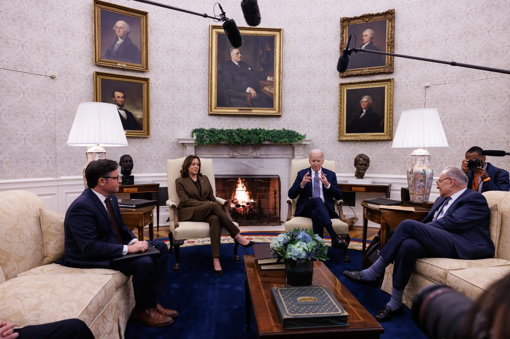

This is a copy of the following story from the New York Times nytimes.com
Speaker Mike Johnson has been searching for a path forward on Ukraine that would provoke the least political backlash from his party. Credit: Kent Nishimura for The New York Times.
Speaker Mike Johnson has begun publicly laying out potential conditions for extending a fresh round of American military assistance to Ukraine, the strongest indication yet that he plans to push through the House a package that many Republicans view as toxic and have tried to block.
His terms may include tying the aid for Kyiv to a measure that would force President Biden to reverse a moratorium on liquefied natural gas exports, something that Republicans would see as a political victory against the Democratic president's climate agenda. The move would also hand Mr. Johnson a powerful parochial win, unblocking a proposed export terminal in his home state of Louisiana that would be situated along a shipping channel that connects the Gulf of Mexico to Lake Charles.
“When we return after this work period, we'll be moving a product, but it's going to have some important innovations,” Mr. Johnson said on Sunday in an interview on Fox News.
That strongly suggests that the aid package for Ukraine, which has been stalled on Capitol Hill for months amid Republican resistance, could clear Congress within weeks. It enjoys strong support among Democrats and a large coalition of mainstream Republicans, and the main obstacle standing in its way in the House has been Mr. Johnson's refusal to bring it up in the face of vehement hard-right opposition in the G.O.P. to sending more aid to Kyiv.
But after the Senate passed a $95 billion aid package for Ukraine and Israel, and with Mr. Johnson facing pressure from the Biden administration and NATO allies, the Republican speaker has been searching for a path forward on the bill that would provoke the least political backlash in his own ranks.
Now, the question appears to be not whether Mr. Johnson will allow aid to come to the floor, but in what form and when.
In the interview, he openly discussed how to structure the aid, saying that he had not come to any final decisions on what he would ultimately put to a vote but that he had been “working to build that consensus” among House Republicans.
Mr. Johnson cited the REPO Act, which would pay for some of the aid by selling off Russian sovereign assets that have been frozen, as one idea under consideration.
And he mentioned an idea he first privately raised in February, at a White House meeting with Mr. Biden and other congressional leaders, of tying the aid to lifting the Biden administration's pause on liquefied natural gas exports. He and other Republicans have argued that by prohibiting American exports of domestic energy, the administration has in effect increased reliance on Russian gas and indirectly funded President Vladimir V. Putin’s offensive against Ukraine. He cited the case of Calcasieu Pass 2, the proposed export terminal in Louisiana.
“We want to unleash American energy,” Mr. Johnson said. “We want to have natural gas exports that will help unfund Vladimir Putin's war effort there.”
Taken together, the measures Mr. Johnson outlined appear to be aimed at convincing skeptical Republicans that at the very least, the cost of the aid package would be offset. Though he did not mention it on Sunday, he has also considered advancing fresh sanctions against Russia.
Mr. Johnson at a meeting at the White House in February. Credit: Anna Rose Layden for The New York Times
The reversal of the liquefied natural gas moratorium in particular could be a powerful political incentive for Republicans, ratcheting up pressure on the White House to abandon a policy they have long denounced.
The administration paused new export permits after months of protests by environmental activists, who argued that adding new gas export facilities would lock in decades of additional greenhouse gas emissions, the main driver of climate change. The administration said it would take time to analyze the impact of new permits on the climate, national security and the economy.
Mr. Johnson's search for a politically viable option to funding Ukraine's attempts to fend off Russian attacks puts him in the middle of two powerful and opposing forces. The hard-right flank of his party, led by Representative Marjorie Taylor Greene of Georgia and egged on by former President Donald J. Trump, has urged him not to allow a vote on aid for Ukraine, arguing that the United States should not be pouring tens of billions of dollars into another country's war. But the leaders of most NATO countries have warned Mr. Johnson that a failure to extend help to Kyiv could lead to the young democracy's undoing, a message that has been echoed by mainstream Republicans, Mr. Biden and Democrats.
Ms. Greene filed a resolution calling for Mr. Johnson's removal late last month before the House left Washington for recess, saying she wanted to send him “a warning.”
Mr. Johnson on Sunday called the move a “distraction from our mission,” but said he shared Ms. Greene's frustration over the spending bills Congress approved to prevent government shutdowns and planned to speak with her this week.
At the same time, Mr. Johnson has continued to face pressure from leaders around the world who have sought to impress upon him the costs of U.S. inaction.
Mr. Johnson and President Volodymyr Zelensky of Ukraine spoke by phone on Thursday, and Mr. Zelensky briefed the speaker on the dire battlefield situation in Ukraine and urged “quick passage” of aid.
Mr. Zelensky said they discussed “the importance of cutting off Russia's sources of funding for its war as soon as possible and using frozen Russian assets for Ukraine's benefits.”
“We recognize that there are differing views in the House of Representatives on how to proceed,” the Ukrainian president wrote on social media, “but the key is to keep the issue of aid to Ukraine as a unifying factor.”
Brad Plumer and Lisa Friedman contributed reporting.